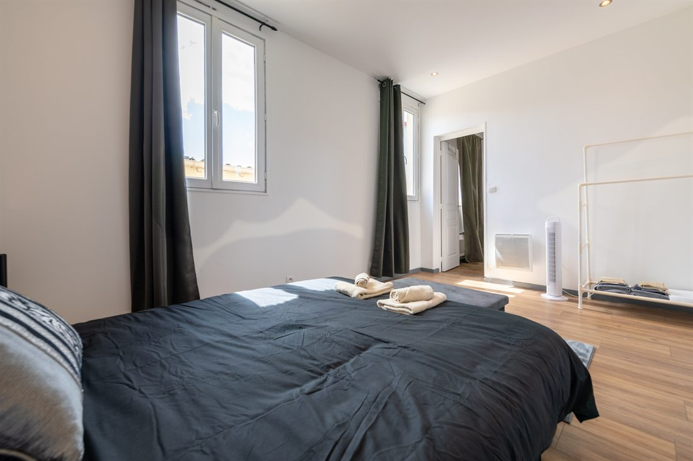

Propriétaire à Ivry-sur-Seine ? MADYS s'occupe de votre location courte durée de A à Z, de l'annonce à la remise des clés.
Limitrophe du 13e arrondissement, Ivry-sur-Seine est reliée à Paris par la ligne 7 du métro et le RER C. La ville attire les voyageurs qui souhaitent séjourner près de la capitale, dans un logement entier et à un tarif plus doux qu'intra-muros.

Une gestion complète de votre location courte durée, de l'annonce à la remise des clés.
Des annonces rédigées et optimisées pour Airbnb, Booking et Abritel, afin de maximiser votre visibilité.
Des photos de haute qualité qui mettent votre bien en valeur et incitent à réserver.
Messages, arrivées et départs : nous gérons toute la communication et l'accueil.
Un entretien irréprochable entre chaque séjour, avec un linge lavé et plié avec soin.
Petits travaux et interventions rapides pour que votre bien reste en parfait état.
Des tarifs ajustés selon la saison, les événements et la demande locale.
Oui. MADYS Conciergerie intervient à Ivry-sur-Seine ainsi que dans les communes voisines : Vitry-sur-Seine, Le Kremlin-Bicêtre, Gentilly, Charenton-le-Pont et le sud-est de Paris.
Cela dépend du type de logement, de son standing et de son emplacement. Notre simulateur en ligne donne une première fourchette en quelques secondes, et nous réalisons une estimation personnalisée gratuite lors du premier rendez-vous.
En trois étapes : un premier rendez-vous, physique ou en visioconférence, puis une visite du logement, et enfin le lancement des services après signature : shooting photo, création des annonces, accueil des voyageurs, ménage et blanchisserie. Voir le détail des étapes.
Estimation gratuite de vos revenus, sans engagement, réponse sous 24h.